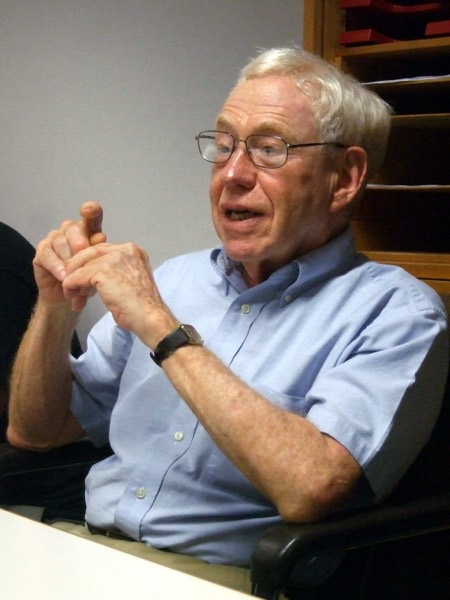

1965 年，一个哲学家告诉 AI 界：你们走错了
然后 AI 界让他滚。西蒙说那篇文章是挂着兰德公司名头的"垃圾"，派珀特说三分之一是八卦，明斯基说哲学批评应该被无视。MIT 的同事一度不愿被人看见和他一起吃午饭——唯一愿意公开与他往来的 AI 研究者是维森鲍姆。
六十年后，记分牌很复杂：他的具体预言大多错了，他的根本质疑至今没被干净地回答。这一页把两边都算清楚，不替他辩护，也不装作他已经被证伪。
他是怎么把海德格尔变成炸药的

先纠正一个常见误解：德雷福斯不是海德格尔的学生。他是分析哲学训练出来的——哈佛物理本科、师从 Føllesdal 与蒯因、1964 年博士论文写胡塞尔的知觉现象学。1953–54 年他在弗莱堡做研究员时曾拜访过海德格尔本人一次，据同事转述，那次会面"令人失望"。他对海德格尔的理解主要来自独立研读。这个外来者身份，既是他能把海德格尔翻译给科学家听的原因，也是专业海德格尔学者批评他"实用主义化"的原因。
《炼金术与人工智能》
兰德公司的 Paul Armer 请他来当一个夏天的"公允批评者"。结果他交出了一篇意在拆掉整个学科地基的檄文，标题把 AI 比作炼金术。报告编号 P-3244，1965 年 12 月。
他的论证不是"计算机不够快"，而是路线本身错了：
- 智能的底座是熟练应对（skillful coping），不是符号运算；
- 熟练应对发生在一片背景实践之上，而这片背景不以任何形式的表征存在；
- 所以"把常识形式化成规则和事实的集合"这条路，不是难，是范畴性地走不通。
这三步分别对应海德格尔的上手状态、在世界之中存在，加上梅洛-庞蒂的身体现象学（意向弧、最大把握）。概念第 III 节的实验台，演示的就是他的第一块砖。
被两边都夸张过的一件事
流传的版本是："德雷福斯断言计算机下不过一流棋手，结果被程序打得惨败，AI 界扬眉吐气。"逐条核对下来，这个叙事在两个方向上都被加工过。
- 他实际说的是什么——1965 年报告里更接近对当时技术现状的陈述："当时最好的程序连业余棋手都下不过"，并引了一个流传的轶事（一个十岁小孩赢了某个程序）。这是报告现状，被后来的叙述逐渐"预言化"成了"他断言计算机永远赢不了"。
- 那盘棋的真实过程——由派珀特组织，对手是格林布拉特写的 MacHack VI。德雷福斯一度找到了吃掉对方后的杀招，几乎要赢；MacHack 靠连续将军叉吃、兑子解围后反败为胜，最终在棋盘中央将死了他。
- 在场的西蒙怎么说——"两个臭棋篓子之间一场精彩的、跌宕起伏的棋局。"这是当时最诚实的一句评价。
- 但 ACM 通讯的标题很不客气——"十岁小孩能赢机器——德雷福斯：但机器能赢德雷福斯。"
六十年后，逐条算账
既然要算，就两边都算。下面每一条都尽量给出可核的依据。
国际象棋
他在 1972/1992 的书中确实明确写过，强大的国际象棋程序"将永远停留在虚构的领域"。1997 年深蓝击败卡斯帕罗夫，这条被干净地证伪。他事后的回应是深蓝只在"孤立领域"取胜——这个回应有道理，但改变不了那句预言本身错了。
自然语言
他的核心论证之一是：没有常识背景就不可能产生流畅、合乎语境的语言。今天的大语言模型在没有任何显式常识库的情况下做到了这一点。这条预言的技术版本已经被推翻。
符号主义那条路
1965 年他说 GOFAI 会撞墙，当时被斥为无知。1980 年代末专家系统崩盘、AI 冬天到来，1992 年他把书名从《计算机不能做什么》改成《计算机仍然不能做什么》。在这一局上，他是当时极少数看对方向的人。
具身与情境
他坚持智能离不开身体与情境，这在符号主义鼎盛期是异端。此后的具身认知、生成认知（Varela / Thompson / Rosch 1991 明确把他列为典范应用）、机器人学的行为主义转向，都朝这个方向走了。路线赌对了。
"它真的理解吗"
他最根本的质疑——缺乏具身背景的系统能否具备真正的理解，还是只是极其精致的表面能力——至今没有被干净地回答。这个问题现在常与 Harnad 的符号奠基问题并列讨论。核查发现：目前尚无被广泛引用的、以"Dreyfus vs LLM"为核心的重量级同行评审综述。相关讨论多为探索性论文与预印本。这是"讨论正在发生"的证据，不是"已有定论"的证据。
五阶段技能模型
与其兄 Stuart 合著《Mind Over Machine》(1986) 提出：新手→高级新手→胜任→精通→专家，专家靠直觉整体判断而非规则推理。Gobet & Chassy 2009 在《Minds and Machines》上反驳：一，没有实证证据支持专业化发展存在离散阶段；二，大量证据（尤其棋手的前瞻搜索）表明专家其实经常进行缓慢的分析性问题求解。争论延续到 2018 年双方仍在互相回应。
《为什么海德格尔式 AI 失败了》
《Philosophical Psychology》20(2), 2007，标题全文是《为什么海德格尔式 AI 失败了，以及修好它需要让它更海德格尔》。这篇文章最值得敬重的地方在于：他批的是那些声称在实现他的主张的人。
- Rodney Brooks 的行为主义机器人——他早年寄予厚望，此时转为批评：这些机器人只对环境的固定特征做反应，本质上仍是刺激到反射的转换，没有学习新的情境相关性的能力。
- Agre & Chapman 的 Pengi——同样的问题，忽视了"学会什么在此刻算相关"这一维度。
- Walter Freeman 的神经动力学——评价最高：自组织的知觉—行动环路在存在论上更合海德格尔的精神。但他仍然指出：这样的模型还需要被赋予与人类身体、动机高度相似的详细结构，事物才可能对它显现为有意义的。
预测加工：回应了他，还是绕开了他？
德雷福斯之后，最有力的候选答案是安迪·克拉克（Andy Clark）一路的预测加工（predictive processing）：大脑是预测机器，通过分层生成模型最小化预测误差，感知与行动被统一解释。这条线索是书架上另一站的主题（见下方收束）。
问题是：预测加工算不算对德雷福斯的回答？
它接管了"相关性"
预测误差最小化提供了一个不需要穷举的相关性机制：重要的就是意外的。这在形式上正面处理了框架问题，而且是可计算的。
它把表征偷偷带回来了
Jack Reynolds 2024 年在《Phenomenology and the Cognitive Sciences》上重提德雷福斯，判断倾向于：预测加工内含内在主义与推理主义预设，它要完成克拉克交给它的任务，就必须诉诸丰富的、预先建构的内部世界表征——而这恰恰是德雷福斯反对的那一样东西。此文原文受付费墙限制，本站据摘要级信息转述，标注为待终校。
还有第三条路线：Bruineberg、Kiverstein 与 Rietveld 一系的"生态—生成"进路（Synthese, 2016），试图用技能意向性框架去驯化预测加工——让有机体直接与"相关可供性场域"打交道，而不依赖抽象表征模型。这更像是把德雷福斯装进预测加工，而不是用预测加工取代他。
如果他今天来看 AI，他不会问"它会不会失控"
德雷福斯问的是"机器能不能真正智能"。海德格尔本人不会问这个问题。按《技术的追问》的逻辑，那是一个工具性问题——正确，但不真实。
他会问的是：在这套东西之下，存在者是以什么方式被解蔽的？
二、判断被订造。凡是能被表述为"输入—期望输出"的判断，都在被编排进可调度的流程。而无法这样表述的判断，正在悄悄地变得"不重要"。
三、人被促逼去以模型的方式看自己。当你开始用"上下文窗口""对齐""带宽"描述自己的心智时，座架已经在你身上生效了。
而按他的诊断，最大的危险不是模型失控，是别的解蔽方式被遮蔽掉——世界上还有哪些东西，是根本不该被表述为可调用的输入输出的？这个问题一旦不再被问，答案就自动是"没有"。
另外要老实说：本站在《技术的追问》页已经指出，把"座架"直接套到监控资本主义、平台经济上的那些流行说法，缺乏严格学术支撑。类比可以打，但不要冒充定论。
那把锤子，最后落在哪里
这座站从一把锤子开始：好用的时候看不见，坏了才现身。走到这里，那个分析已经变成了一把可以到处用的尺子——凡是运转顺畅的东西，都是不可见的；而不可见的东西，正是最需要被追问的。
你用得最顺手的那套方法、你最不假思索的那个指标、你从不怀疑的那个流程——它们此刻都处在"上手"状态，也就是说，你看不见它们。海德格尔的全部工作，可以概括成一件事：想办法在它们没有坏掉的时候，就看见它们。
书架里的另外三站
与自由能原理那一站：隔空对账。那座站讲克拉克的预测加工、塞斯的受控幻觉、弗里斯顿的主动推理——用一个统一的数学框架解释感知、行动与自我。而这一站要记的是它欠下的那笔账：预测误差最小化究竟解决了德雷福斯提出的"相关性"问题，还是把表征主义换了个说法请了回来？两站合起来读，一边是数学化的解法，一边是对这个解法的原始质疑。只读一边，会以为它已经赢了。
说明：这笔账是后继学者（Reynolds 2024、Bruineberg 等）代记的，不是德雷福斯与克拉克本人的正面对垒——详见本页上方那条核查说明。
与学习科学那一站：两种问法。德雷福斯兄弟的五阶段模型说专家靠整体性的直觉判断，Gobet 与 Chassy 用棋手的前瞻搜索反驳说专家其实常在做缓慢的分析求解。那一站并不介入这场争论——它讲的是埃里克森的刻意练习，追问的是专长如何被造出来，而不是专长长什么样。两站接起来才完整：德雷福斯描述终点的现象学，埃里克森描述通往终点的工程学。这不是谁对谁错，是"专长"这个词在两种问法下指的不是同一件事。
与怀特海那一站：同题异答。两个人几乎在同一个十年里对着同一件事发难——《存在与时间》1927，《过程与实在》1929——把世界看成一堆有属性的现成实体，行不通。怀特海的答案是用"过程"替换"实体"，语言是数学化的；海德格尔的答案是回到存在问题本身，语言是词源学的。一个诊断，两副药方，各走各的路。
WO ABER GEFAHR IST, WÄCHST DAS RETTENDE AUCH
本页图片取自 Wikimedia Commons：休伯特·德雷福斯肖像（摄影 Jörg Noller，2011，CC BY-SA 3.0 DE）。完整许可以 Commons 文件页为准。本站为非商业个人读书笔记，仅使用可自由传播的图片；如有版权问题请通过 GitHub issue 联系。